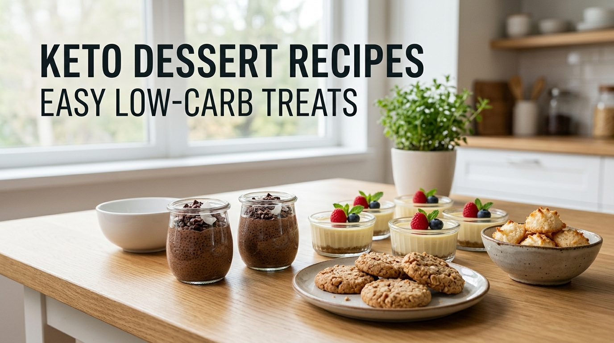

<!DOCTYPE html>
<html lang="en">

<head>

<meta charset="UTF-8">
<meta name="viewport" content="width=device-width, initial-scale=1.0">

<title>Keto Dessert Recipes for Beginners: Easy Low-Carb Treats | The Keto Vibes</title>
<link rel="stylesheet" href="style.css">

</head>

<body>

</body>

</html>
<header>

<nav>

<div class="logo">
<a href="index.html">The Keto Vibes</a>
</div>

<ul class="nav-links">

<li><a href="index.html">Home</a></li>

<li><a href="blog.html">Blog</a></li>

<li><a href="about.html">About</a></li>

<li><a href="contact.html">Contact</a></li>

</ul>

</nav>

</header>
<main class="article-page">

<section class="article-header">

<h1>Keto Dessert Recipes for Beginners: Easy Low-Carb Treats</h1>
<p class="article-meta">
Published: August 2026 | By The Keto Vibes
</p>

</section>

<section class="article-content">


<div class="article-intro">

<p>
Looking for easy keto desserts that fit into a low-carb lifestyle? You don't have to give up every sweet treat when starting keto. With the right ingredients and simple recipes, you can enjoy satisfying dessert options while keeping your meals aligned with your low-carb goals.
</p>

<p>
This beginner-friendly guide covers practical keto dessert ideas, helpful ingredients, simple preparation tips, and common mistakes to avoid. The goal is to make keto desserts easier to understand and easier to fit into your weekly meal routine.
</p>

</div>
<div class="article-recommendation">

<h2>Looking for More Keto Meal Ideas?</h2>

<p>
If you'd like a more structured keto meal plan and a larger collection of keto-friendly recipes, you can explore the Ultimate Keto Meal Plan resource.
</p>

<a href="https://www.claudiacaldwell.com/oto-uf61a?el=splittest-1214-bradflow-control&aff=ketovibesonli53b1"
target="_blank"
rel="nofollow sponsored noopener"
class="recommend-btn">

Explore the Keto Meal Plan →

</a>

<p class="affiliate-note">
This is an affiliate link. If you make a purchase through this link, The Keto Vibes may earn a commission at no additional cost to you.
</p>

</div>
<div class="table-of-contents">

<h3>🍰 In This Guide</h3>

<ul>

<li><a href="#what-makes-keto-dessert">What Makes a Dessert Keto-Friendly?</a></li>

<li><a href="#dessert-ideas">Easy Keto Dessert Ideas</a></li>

<li><a href="#best-ingredients">Helpful Ingredients for Keto Desserts</a></li>

<li><a href="#dessert-tips">Simple Keto Dessert Tips</a></li>

<li><a href="#common-mistakes">Common Keto Dessert Mistakes</a></li>

<li><a href="#faq">Frequently Asked Questions</a></li>

</ul>

</div>
<h2 id="what-makes-keto-dessert">What Makes a Dessert Keto-Friendly?</h2>

<p>
Keto-friendly desserts are usually built around ingredients that keep carbohydrates relatively low compared with traditional desserts. Instead of relying on large amounts of sugar, regular flour, or high-carb dessert ingredients, many low-carb options use ingredients such as unsweetened dairy, nuts, seeds, coconut, and low-carb sweetener alternatives.
</p>

<p>
The goal is not to turn every dessert into a “health food.” It is simply to make smarter ingredient choices that fit more easily into a low-carb eating pattern. Portion size and the overall balance of your meals still matter.
</p>

<h2 id="dessert-ideas">Easy Keto Dessert Ideas</h2>

<p>
You don't need complicated recipes to enjoy an occasional keto-friendly dessert. Here are some simple ideas that can work well for beginners and provide inspiration for building a wider variety of low-carb treats.
</p>

<ol>

<li>
<strong>Chocolate Chia Pudding</strong> – Combine chia seeds with unsweetened milk and unsweetened cocoa for a simple make-ahead dessert.
</li>

<li>
<strong>Berry and Greek Yogurt Cups</strong> – Use plain unsweetened Greek yogurt with a small serving of berries and a few chopped nuts.
</li>

<li>
<strong>Low-Carb Chocolate Mousse</strong> – A creamy dessert made with unsweetened cocoa and suitable low-carb ingredients.
</li>

<li>
<strong>Peanut Butter Bites</strong> – Small portions of natural peanut butter combined with other keto-friendly ingredients can make a simple sweet snack.
</li>

<li>
<strong>Coconut Chia Cups</strong> – Chia seeds and unsweetened coconut ingredients can be turned into an easy chilled dessert.
</li>

<li>
<strong>Chocolate Almond Treats</strong> – Almonds and unsweetened chocolate ingredients can be used to create a simple low-carb dessert option.
</li>

<li>
<strong>Avocado Chocolate Pudding</strong> – Ripe avocado can provide a creamy base when combined with unsweetened cocoa and a suitable low-carb sweetener.
</li>

<li>
<strong>Keto Cheesecake Cups</strong> – Small cheesecake-style portions can be made with cream cheese, a nut-based crust, and low-carb ingredients.
</li>

</ol>
<h2 id="best-ingredients">Helpful Ingredients for Keto Desserts</h2>

<p>
Choosing the right ingredients can make keto desserts easier to prepare and easier to fit into a low-carb meal routine. You don't need a long shopping list to get started.
</p>

<ul>

<li>
<strong>Unsweetened Cocoa</strong> – A useful ingredient for chocolate-flavored desserts without relying on sugary cocoa mixes.
</li>

<li>
<strong>Chia Seeds</strong> – Chia seeds work well in puddings and other make-ahead dessert ideas.
</li>

<li>
<strong>Plain Greek Yogurt</strong> – Unsweetened Greek yogurt can be used as a creamy base for simple dessert cups.
</li>

<li>
<strong>Almonds and Walnuts</strong> – Nuts can add texture and richness to many low-carb dessert ideas.
</li>

<li>
<strong>Coconut</strong> – Unsweetened coconut products can work well in chilled desserts and snack-style treats.
</li>

<li>
<strong>Avocado</strong> – Its creamy texture makes avocado useful in some chocolate-based dessert recipes.
</li>

<li>
<strong>Cream Cheese</strong> – A common ingredient for cheesecake-style keto desserts.
</li>

<li>
<strong>Low-Carb Sweetener Alternatives</strong> – Depending on the recipe, a suitable low-carb sweetener can be used instead of regular sugar.
</li>

</ul>

<p>
When buying packaged ingredients, checking the nutrition label can help you understand the carbohydrate content and make choices that better fit your overall eating plan.
</p>
<<h2 id="dessert-tips">Simple Keto Dessert Tips</h2>

<p>
A little planning can make keto desserts easier to enjoy without turning them into an everyday habit. Keeping a few useful ingredients on hand can also make it easier to prepare something simple when you want a sweet option.
</p>

<ul>

<li>✅ Read nutrition labels when buying packaged ingredients.</li>

<li>✅ Keep portions reasonable, even when ingredients are low in carbohydrates.</li>

<li>✅ Prepare chilled desserts such as chia pudding ahead of time.</li>

<li>✅ Keep unsweetened cocoa, nuts, chia seeds, and plain Greek yogurt available.</li>

<li>✅ Try simple recipes first before moving on to more complicated desserts.</li>

<li>✅ Store homemade desserts in small portions so they are easy to serve.</li>

</ul>

<p>
The goal is to make keto desserts fit into your overall eating pattern without letting treats replace balanced meals or everyday nutritious foods.
</p>
<<h2 id="common-mistakes">Common Keto Dessert Mistakes</h2>

<p>
Keto desserts can fit into a low-carb lifestyle, but a few common mistakes can make them less practical than expected. Keeping the basics in mind can help you make more informed choices.
</p>

<ul>

<li>❌ Assuming a dessert is low-carb just because it is labeled "keto."</li>

<li>❌ Ignoring serving size and eating large portions.</li>

<li>❌ Using regular sugar or high-carb ingredients in a recipe without checking alternatives.</li>

<li>❌ Forgetting to check nutrition labels on packaged ingredients.</li>

<li>❌ Letting desserts replace balanced meals and nutrient-rich foods.</li>

<li>❌ Choosing complicated recipes when a simple option would work just as well.</li>

</ul>

<p>
A good approach is to keep desserts as one part of your overall eating pattern while continuing to focus on balanced meals, appropriate portions, and practical food choices.
</p>
<<h2 id="faq">Frequently Asked Questions</h2>

<h3>Can I have dessert while following keto?</h3>

<p>
Yes. Some desserts can be adapted to a lower-carb eating pattern by choosing ingredients that are lower in carbohydrates and limiting added sugars. Portion size and your overall eating pattern still matter.
</p>

<h3>What can I use instead of regular sugar?</h3>

<p>
Some keto recipes use low-carb sweetener alternatives instead of regular sugar. The best choice depends on the recipe and your individual preferences, so checking the ingredient and nutrition information is helpful.
</p>

<h3>Are berries okay in keto desserts?</h3>

<p>
Some berries can fit into a low-carb eating pattern, but portion size matters because fruit still contains carbohydrates. Using a modest amount can work in some keto dessert recipes.
</p>

<h3>What is an easy keto dessert for beginners?</h3>

<p>
Simple options such as chia pudding, plain Greek yogurt with a small amount of berries, or a basic chocolate chia dessert can be easier starting points because they use relatively simple ingredients.
</p>
<h2 id="conclusion">Conclusion</h2>

<p>
Keto desserts can be a practical part of a low-carb lifestyle when you focus on simple ingredients, reasonable portions, and an overall balanced eating pattern.
</p>

<p>
You don't need complicated recipes to get started. Try a few simple dessert ideas, keep useful low-carb ingredients on hand, and choose options that fit comfortably into your weekly meal routine.
</p>

<p>
As you become more familiar with keto-friendly ingredients, having a structured collection of recipes and meal-planning resources can also make it easier to add variety to your routine.
</p>
<div class="article-recommendation">

<h2>Recommended Keto Resource</h2>

<p>
If you'd like more structured keto meal planning and a larger collection of keto-friendly recipes, the Ultimate Keto Meal Plan includes a 30-day meal plan, keto food guidance, dessert recipes, and additional keto recipe resources.
</p>

<p>
It can be a useful option for beginners who want more meal ideas and a more organized way to plan their keto routine.
</p>

<a href="https://www.claudiacaldwell.com/oto-uf61a?el=splittest-1214-bradflow-control&aff=ketovibesonli53b1"
target="_blank"
rel="nofollow sponsored noopener"
class="recommend-btn">

Explore the Keto Meal Plan →

</a>

</div>
</section>

</main>
<footer>

<p>

<a href="about.html">About</a> |

<a href="contact.html">Contact</a> |

<a href="privacy-policy.html">Privacy Policy</a> |

<a href="disclaimer.html">Disclaimer</a> |

<a href="affiliate-disclosure.html">Affiliate Disclosure</a>

</p>

<br>

<p>

© 2026 The Keto Vibes. All Rights Reserved.

</p>

</footer>